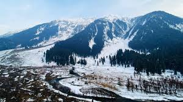

About Kashmir
Kashmir, often called “Paradise on Earth”, is one of the most beautiful regions in India,
located in the northernmost part of the country. With its snow-capped mountains, lush valleys,
sparkling lakes, and colorful gardens, Kashmir offers a magical experience for nature lovers and adventure seekers.
Why Visit?
- Experience the beauty of Dal Lake with a Shikara ride and houseboats.
- Explore Gulmarg – a paradise for skiing and the world’s highest golf course.
- Visit Pahalgam and Sonmarg for breathtaking landscapes and trekking trails.
- Witness the vibrant Tulip Garden in Srinagar during spring.
Location & Travel
Nearest Railway Station: Jammu Tawi (~270 km from Srinagar)
Nearest Airport: Srinagar International Airport (~15 km from city center)
Well connected by road from Jammu, with breathtaking mountain views along the way.
Visiting Details
- Best Time to Visit:
- March – May (spring flowers and gardens)
- June – September (pleasant summer weather)
- December – February (snowfall and winter sports)
- Timings: Open all year round (season decides activities).
- Entry Fee: No entry fee to explore the valley (charges for specific gardens/attractions).
Average Travel Expense
A 3–5 day trip to Kashmir including food, stay, and local travel can cost around:
- Budget: ₹4,000 – ₹6,000 per day
- Mid-range: ₹7,000 – ₹10,000 per day
← Back to Home